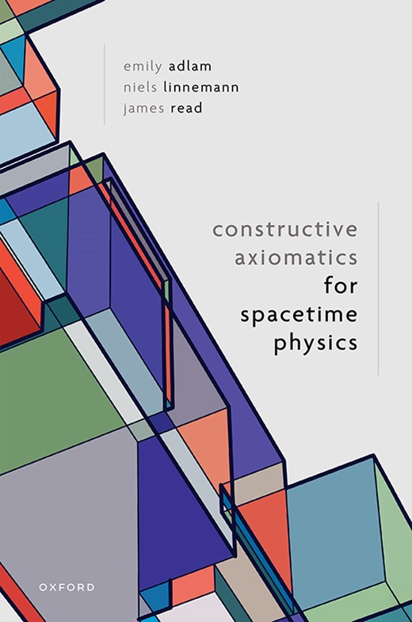
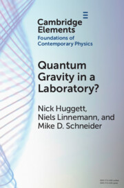
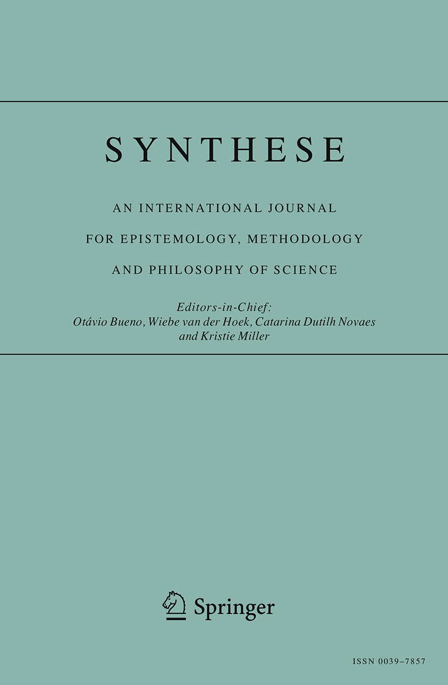

Research
Epistemology · Metaphysics · Philosophy of Physics
My work sits at the intersection of philosophy and physics. As an epistemologist, I focus on reasoning in scientific contexts and the epistemology of spacetime. As a metaphysician, my main topics are laws of nature and the metaphysics of space and time. The four themes below organise my current research — click any tile to expand.
+
Theme I
Reasoning in Physics & Science
Theory construction, confirmation, and estimation — from quantum gravity to Fermi problems.
I study how physicists reason their way toward new theories in the absence of clear empirical guidance. Topics include analogical reasoning, robustness analysis, physics-specific heuristics (quantisation, semi-classical extrapolations), analogue experiments, anthropic reasoning, and the epistemology of guessing.
Analogue reasoning
Non-empirical confirmation
Theory construction
Robustness
Anthropic principle
Fermi estimation
+
Theme II
Foundations of Classical Spacetime
Axiomatics, conventional wisdoms, and alternative readings of general relativity.
I investigate the conceptual foundations of general and special relativity: constructive axiomatics, the status of light propagation and gravitational waves, GR as a spin-2 field theory, GR as a thermodynamic/hydrodynamic theory, and the intertheory relation between GR and SR (equivalence principles). Recent work with Emily Adlam and James Read explores constructive axiomatics as an epistemology of spacetime.
Axiomatisation
General Relativity
Equivalence principles
Spin-2 gravity
Black holes
+
Theme III
Nature of Space & Time
Dynamical and functionalist accounts of spacetime; the fate of spacetime in quantum gravity.
I examine what spacetime is metaphysically, and what happens to it in quantum theories of gravity. My work explores spacetime functionalism, dynamical approaches, emergence of geometry, and the spatiotemporal gap problem — asking how the spacetime of GR can emerge from a fundamentally non-spatiotemporal quantum gravitational theory.
Spacetime functionalism
Spacetime emergence
Quantum gravity
Causal set theory
+
Theme IV
Laws of Nature
Symmetry–conservation law relations, modal strength, and meta-laws.
I examine the metaphysical and physical status of laws of nature: what makes something a law, whether laws differ in modal strength (metaphysically necessary vs. contingent), whether there are meta-laws governing ordinary laws, and what Noether's theorems tell us about the connection between symmetries and conservation laws.
Laws of nature
Meta-laws
Noether's theorems
Symmetries
Modal necessity
Keyword Overview
- Analogical reasoning and confirmation 2.4, 2.7; 3.1
- Axiomatisation 1.2
- Epistemology of spacetime 1.2; 2.5, 2.16
- Generative strategies in theory construction 2.4, 3.1
- Guessing 2.25
- Laws of nature 2.20, 2.14, 2.12, 2.8
- Metaphysical necessity 2.8, 2.12, 2.14
- Non-empirical confirmation 2.4, 2.7, 2.11
- Principles in theory construction 2.4, 2.3, 2.10
- Renormalisability and UV completion 2.2, 2.3
- Spacetime emergence 2.4, 2.6, 2.9; 4.1
- Spacetime functionalism 2.9; 4.1
- Superluminal signal propagation 2.16
- Symmetries and conservation laws 2.8; 3.2
- Toy models 2.1
- Trade-offs 2.26, 2.25
- Quantum gravity phenomenology 1.1, 2.7
Books & Edited Issues

Book · 2025
Constructive Axiomatics for Spacetime Physics
Oxford University Press · 224 pp.
An exposition of constructive axiomatics as an epistemology of spacetime, exploring how
axiom systems can ground our physical understanding of space and time — and novel
applications such as making sense of spacetime superpositions.

Cambridge Element · 2023
Quantum Gravity in a Laboratory?
Cambridge University Press · 98 pp.
Three philosophers of physics came together to clear up a puzzle: how could a newly
proposed class of tabletop quantum gravity experiments be a locus of dispute when all
parties agree on their expected outcomes — and what do those results reveal about the
quantum nature of gravity?

Edited issue · 2021
Special Issue on Spacetime Functionalism
Synthese · Volume 199, Supplement 2 · 12 articles
A special issue on spacetime functionalism in general relativity and quantum gravity,
bringing together work on how spacetime can be understood through its functional role
across classical and quantum-gravitational settings.
All Publications
For citation metrics see my Google Scholar profile.
- Loading publications…
Recorded Talks
Selected Talks
- Loading talks…